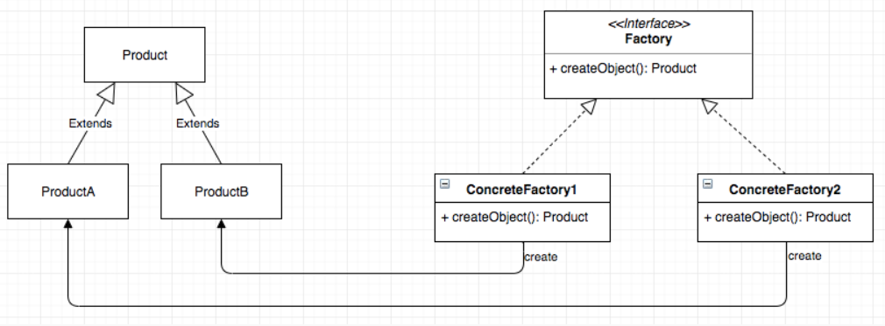
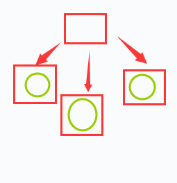

创造型模式-Factory Method (2)
一个熟悉的名词
工厂，我个人觉得，已经开始思考如何更好构建自己代码的码畜一定接触过这个概念。
而我这个码畜第一次是在 flask document 中听说到的。
首先，我这里应该声明，中文的 “工厂” 与 英文的 “Factory” 没有什么太大的不同。一提起 工厂，想到的应该是冒着烟的大烟囱，几间或者几十间大小不一的厂房，以及其中忙碌着的工人们。这是我在没有了解 Factory Method 之前对 工厂 这个词的初始印象。
A fatcory, manufacturing plant or a production plant is an industrial site, usually a complex consisting of several buildings filled with machinery, where workers manufacture items or operate machines which process each item into another.
而代码中是不可能搭建真正的 “厂房” 和 “烟囱” 的。所以要了解为什么用 Factory Method 描述这么一种设计模式，需要从另外一个方向来考虑，也就是 “目的”。
何谓工厂
上面 Wiki 已经解释了。但是总的来说，工厂是生产东西的。明星工厂是出产明星的，化工厂是出产化工用品的，梦工厂是出产动画的。
总归要有一种产品，才算得上是工厂。
这应该算是比较朴素的解释了。但是有了这个解释还不够，为什么存在一种创造型模式叫 工厂方法？如果说出产一个东西就能算得上是工厂，那岂不是所有的创造型模式都可以叫做 工厂方法 了？
我个人在看书的时候没能解决自己的这个问题。
除此之外，现实生活中的工厂肯定不仅仅出产一种产品。但无论是 P73 中的 不提供所声明工厂方法实现的抽象类，还是 提供所声明工厂方法缺省实现的具体类，都存在 一个工厂类只能构造一种特定类 的问题。目前的话，已知有一种 参数化工厂方法 可以让一个工厂函数创建多种不同的类，但这么看，前面的两种方法是否有些 “名过其实” 了？
所以在我本人看来，以为不成熟的思想为基础进行揣测，我更觉得 Workshop 比 Factory 更加适合。但是下面我肯定还是会按照 GoF 中的命名 —— Factory Method 来叙述。
为何有工厂
在看 P72 图时，未来的我可能会对一个地方感到难以理解：

为什么 Manipulator 是抽象的？
如果它不是抽象类，而是一个具体类，并在这个类中定义一系列的工厂函数，那该多好，比如：
1 | class Manipulator { |
我不知道未来看完这本书之后，我能记住多少书里的东西。但是如果我还会产生这个想法的话，那我建议自己还是怀着 无比悲痛的心情 再把书多翻两遍 —— 因为这说明我一点都没懂。
这又回到了 为什么需要虚类 这个问题上了。
至少在这里，虚类的存在是作为接口提供更好的封闭性和抽象性。
1 | class Manipulator { |
这样之后，如果我想再添加一个用来生成新类的新工厂方法，那么只需要通过继承虚类 Manipulator 就可以做到了，而不需要进入 Manipulator 来声明、实现新的方法。
所以 给每一个产品配备一个工厂方法，这件事看起来就非常地合乎正常人类的审美以及思维。如此看来，参数化的工厂方法 反而有一些不雅观了。因为它破坏了整齐划一的美感，尽管正常人类更愿意接受 参数化 这种自然而然得到的解法。
有关工厂
“工厂” 并不一定只有一种产品。这里的 “工厂”，说的是那个抽象类 Manipulator，而不是具体的 TextManipulator。
我可以把 Manipulator 比作一个抽象出来的车间，每个车间都是这么一个框架，可能有 Create()，可能还有其他方法。而具体的 TextManipulator 就是已经装修好的、有设备机械的车间。

这个图的表示有些抽象，但其实就是这么一个意思。我现在手头有了一系列不同的继承于抽象工厂类的子类（图上面有圆圈的图形，代表了三种子类），我就可以根据这些子类创造不同的产品。
我的产品并不一定都一样，产生的实例们 可能也有区别。最后，我可以通过一系列工厂方法的调用，完成一个暴露给使用者的函数：
1 | Maze* MazeGame::CreateMaze() { |
甚至说，用户可以自己用这些暴露出来的工厂函数实现自己想要的最终产物。（由于这里只说工厂方法，所以不说其他设计模式掺杂进来之后的效果了）
不得不说
factory 这个概念给我带来的影响是巨大的。
其实 创造性模式 这里面的设计模式都给了我不小的收获。正如书末尾提到的：
设计模式使你可以更多地描述 “为什么” 这样设计而不仅仅是记录你的设计结果。
我觉得创造是很重要的。好的开始是成功的一半，好的创造方法自然也是成功的一半。一旦创造方法设计得出色，那么调试、单元测试都是更加容易做的。
我接触编程不到半年时，就知道了什么是 “单一职责”，工厂方法 毫无疑问，在创建对象上就是 SRP 的体现。尽管外层的函数有可能需要多次使用工厂方法创造多个实例，麻烦了一些。但是这不影响工厂方法在它本职工作上很好地遵守了这个原则。
最后说回 flask
一开始提到我第一次接触 factory 概念是在 flask 的官方文档，其中给了这样一段代码：
1 | def create_app(config_filename): |
假设我现在一句 flask 也不会，来试图理解一下这个 工厂函数 的意思：
- 首先，它返回一个名为
app的实例。- 也就是说，这个函数的输出是一个
Flask对象。 - 为什么我知道返回的是一个实例？我不是一句
flask都不会吗？ - 但是这里不是写着：
app = Flask(__name__)吗……
- 也就是说，这个函数的输出是一个
- 同时，这个 工厂函数 的输入是
config_filename。- 然后看下面的的确确利用这个配置文件路径对
app进行了配置：app.config.from_pyfile(config_filename)。
- 然后看下面的的确确利用这个配置文件路径对
- 此后，还对数据库、管理视图进行了配置。
- 很明显这些东西都是假定写好了的。
- 因为用了
blueprint……
也就是说，这个 工厂函数 与书中提到的 参数化工厂方法 相似。只不过这里的参数化体现在 config_filename 这个文件中，并且无论给出怎样的参数，该工厂函数都仅仅生成 一种类的实例，而不能生成多种 Flask 类的子类 的实例。
这里的参数化，只不过是通过配置文件来对单个类进行定制，而非在不同子类之间进行选择。可以想象，这个配置文件中有关于 host, mode, port 等一系列配置信息。
在这种 参数化工厂方法 下，一个 create 函数，因配置文件不同可以创造 多种 产品(此指 flask 实例)，正与 P73 中的描述类似。
flask 官方文档还提出了一些建议：
The factory function above is not very clever, but you can improve it. The following changes are straightforward to implement:
Make it possible to pass in configuration values for unit tests so that you don’t have to create config files on the filesystem.
Call a function from a blueprint when the application is setting up so that you have a place to modify attributes of the application (like hooking in before/after request handlers etc.)
Add in WSGI middlewares when the application is being created if necessary.
虽然说是一些关于测试、开发上的建议，但是也可以看出，在 参数化工厂方法 下，工厂类虽然并不是那么清晰，甚至让刚刚接手的人感到繁杂，需要一点点理解每句话的含义（如果格外抽象的话），但是它确实还是方便的。